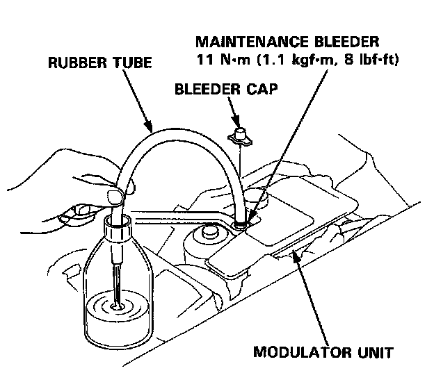

Relieving Accumulator/Line Pressure
Relieving System Pressure
CAUTION: Be sure to drain the high-pressure brake fluid completely before performing the modulator function check, disposing the modulator unit, and ABS pump motor replacement.
- Do not spill brake fluid on the car; it may damage the paint; if brake fluid does contact the paint, wash it off immediately with water.
- Do not reuse the drained brake fluid.
- Do not loosen the relief plug on the accumulator.

1. Remove the bleeder cap from the maintenance bleeder on the modulator unit.
2. Attach the wrench to the maintenance bleeder.
3. Connect a rubber tube of the appropriate diameter to the maintenance bleeder, and set the other end of the rubber tube in a suitable container.
4. While holding the rubber tube with your hand, slowly loosen the maintenance bleeder 1/8 to 1/4 turn to collect the brake fluid in the container.
CAUTION: Do not loosen the maintenance bleeder too much. The high-pressure brake fluid can burst out.
5. Tighten the maintenance bleeder to the specified torque.